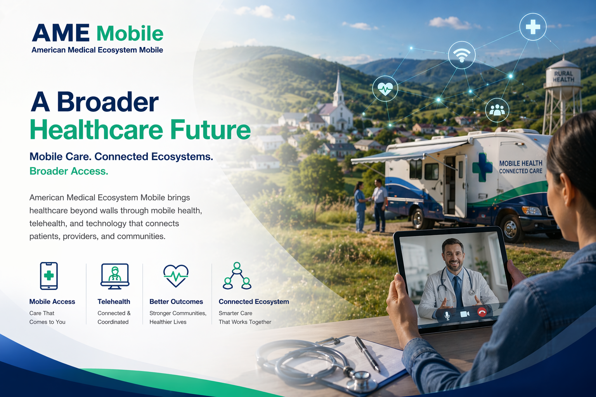

AME Mobile expands care access through mobile health, telehealth, connected infrastructure, and technology-enabled patient journeys — designed for real communities.
What We Stand For
AME Mobile · Brand Statement

We combine healthcare access, digital tools, telehealth, coordination, and operational thinking into one broader vision for modern care delivery — especially for rural, underserved, and distributed communities.
Our mission: to broaden healthcare access and strengthen care delivery through a mobile, connected, and technology-enabled medical ecosystem.
What We Build
Mobile Healthcare Access
We extend care into the field, community, and remote settings through flexible delivery models that travel with the patient.
Telehealth Enablement
Virtual care connected to real operations, follow-up, and measurable outcomes — not isolated video calls.
Connected Patient Journeys
We guide patients from screening and diagnosis through to treatment and ongoing care — with no gaps in the handoff.
Digital Health Infrastructure
Technology foundations — FHIR integration, EHR connectivity, reporting — that make the ecosystem actually work together.
Transformation-Focused Innovation
Work aligned with healthcare transformation goals — access, continuity, and long-term sustainability at the forefront.
The Challenge
AME Mobile addresses this by advancing an American Medical Ecosystem Mobile model — where healthcare is designed as an interconnected system rather than a collection of disconnected parts. Broader reach. Stronger continuity. Technology with practical value.
RHTP Alignment
AME Mobile is designed for a future where transformation depends on broader access, operational coordination, digital infrastructure, and sustainable delivery models — especially in rural and underserved settings.
Nationwide Rural Health
Activity Dashboard
AI-parsed tracking of Rural Health Transformation Program implementation across all U.S. states
Tracking more than $10.9B in state awards
Not affiliated with HRSA · For research use
Why It Matters
01
Broader Reach
Care that moves into communities — not waiting for communities to come to it.
02
Stronger Continuity
Patients followed through every stage of their journey, from screening to sustained care.
03
Smarter Coordination
Systems that talk to each other — and people who know how to make them work together.
04
Practical Technology
Digital tools with real workflow value, not just platforms deployed and left behind.
05
Resilient Delivery
Models built to sustain — financially, operationally, and in the communities they serve.
06
Ecosystem Thinking
Every service, tool, and partnership designed as part of a connected whole — not isolated parts.
Start a Conversation
AME Mobile is building a more connected healthcare future — where care moves freely, systems work together, and communities have better access to the services they need.
Mobile Care · Connected Ecosystems · Broader Access
info@amemobile.net